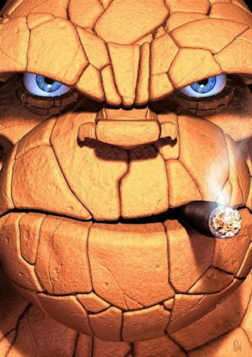

<html lang="fr">
<head>
  <meta http-equiv="content-type" content="text/html; charset=UTF-8">
  <link>
  <meta charset="UTF-8"/>
  <title>cocotte.html</title>
  <style>
    body { display:block; margin:5px;}
    #height100 { position:relative; width:100%; height:100%;}
    #canvas3d { position:absolute; width:100%; height:100%; left:0; top:0; border:1px solid darkblue;}
  </style>

  <script src="app.js" type="application/javascript"></script>

</head>
<body>
  <div id="height100">
    <canvas id="canvas3d"></canvas>
  </div>

  <!-- Inline model -->
  <script id="cocotte.txt" type="not-javascript">
  // Cocotte
  d -200 200 -200 -200 200 -200 200 200
  // Marque les médianes et diagonales
  c 0 1 c 0 3 c 0 2 c 1 3
  // Marque les demi-bords
  c 0 8 c 8 3 c 0 4 c 4 1
  // Marque les coins
  c 6 0 c 6 1 c 6 2 c 6 3
  // Retourne iad interpolateur accelerate decelerate
  iad
  t 500 ty 180)
  // Replie le coin et retourne
  t 1000 r 48 180 21 0 10)
  o 1 24 0 7 25
  t 500 ty 180)
  // Bord haut
  t 1000 r 35 179 8 17 3) // Pas mal
  t 500 r 55 90 17 3 a 3 19)
  // Côté droit
  t 1000 r 29 179 5 22 2 a 19 3 17)
  t 500 r 54 -45 19 3 17)
  t 100 r 55 -30 17 a 3) // Ferme la patte
  // Oreille bas
  t 500 r 53 -90 22 2 a 2 18) // Bof à revoir
  t 1000 r 45 179 1 12 7 a 18 2 22)
  t 500 r 53 -87 22 2 18 a 18 2)
  t 100 r 52 30 18 a 2) // Ferme la patte
  // Oreille bas gauche
  t 500 r 50 -90 1 12 a 1 24)
  t 1000 r 23 179 4 a 24 1 12)
  t 500 r 50 -87 12 1 24 a 24 1)
  t 100 r 50 -30 24 a 1) // Ferme la patte
  // Replie en ouvrant le bec
  t 500 r 16 -90 10 8 20 17 16 14 3 19 r 40 -90 0)
  t 500 r 16 -80 10 8 20 17 16 14 3 19 a 0)
  // Ajuste à peu près
  o 0
  r 24 10 4 r 37 -10 8
  r 29 -5 5 8 r 23 -5 7 4
  r 15 10 21  r 15 -10 10
  // Montre
  iao
  t 1000 zf)
  t 1000 tz -45)
  t 1000 zf)
  iso t 4000 ty 360)
  </script>

  <!---->
  <!---->
  

</body>
</html>